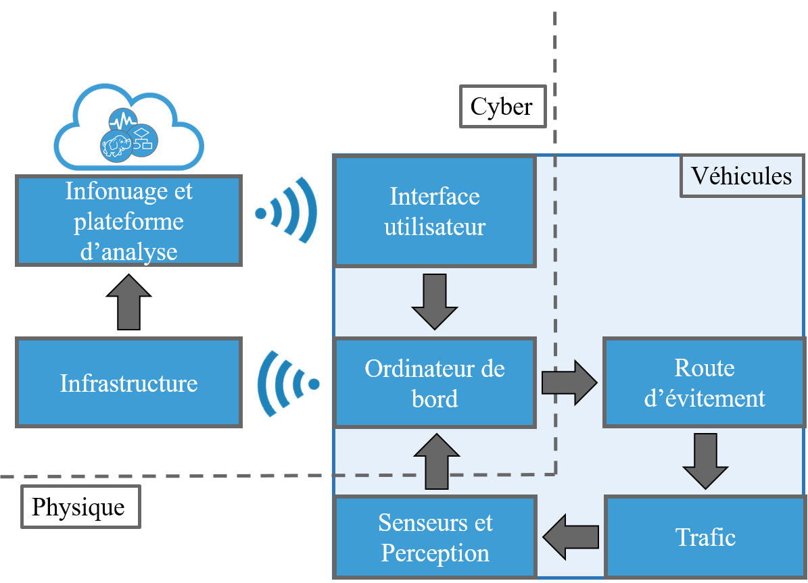
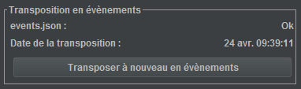
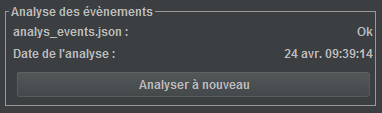
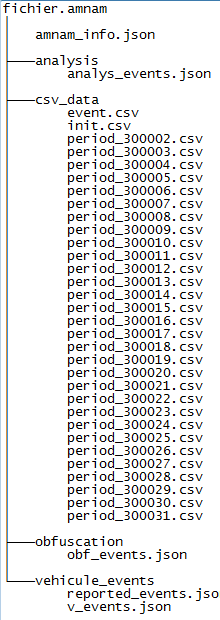
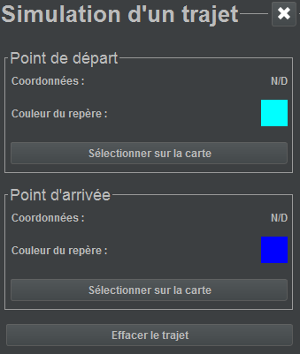

Guide d'utilisation
Introduction
Notre plateforme, dans une application concrète, opère en quatre étapes :
- la génération d’un évènement;
- l’envoi de celui-ci;
- le traitement des évènements pour la création d’une perception globale;
- la distribution des nouvelles informations aux véhicules.
Initialement, le véhicule, par ses capteurs et sa perception augmentée, recueille et génère un nombre donné d’informations sous forme d’évènements. Par exemple, un choc causé par un trou dans la chaussée génère un évènement dans la perception du véhicule.
Une fois que le message contenant le récent évènement est prêt, la procédure d’envoi suivante est entamée :
Quand l’infrastructure en borne de route reçoit un évènement par DSRC, elle le redirige à l’infonuage central.
Lors de la réception d’évènement, l’infonuage enregistre ce dernier dans une base de données d’archivage. Suite à l’analyse ponctuelle des évènements par nos algorithmes, la perception augmentée calculée sera sauvegardée dans une autre base de donnée. Ultimement, l’analyse de ces données profitera à l’utilisateur sur la route.
Les étapes expliquées ci-haut est une estimation du fonctionnement réel de notre plateforme. Par contre, le budget qui nous est alloué actuellement nous empêche de faire des tests à grande échelle; une future phase du projet nous permettra d’intégrer notre plateforme dans une plus grande entitée qui se rapproche de l’application réel de notre projet. Plutôt, nous développerons l’application AMNAM (AMNAM N’est Aucunement Maps), une suite d’outils permettant le traitement de données véhiculaires provenant d’un simulateur développé par notre partenaire Virage Simulation. Cette plateforme nous permettra de tester nos algorithmes et différents systèmes sous-jacents.
Fonctionnement
Traduction
Dans la réalité, un véhicule lève un évènement pour chaque observation sur les conditions routières qu’il fait. Dans la simulation, chaque véhicule lève un évènement à chaque pas de simulation. L’idée est qu’un évènement qui est à proximité d’un autre et qui est suffisamment similaire a probablement la même source, et devrait n’être levé qu’une fois pour le traitement. La traduction des fichiers de données provenant du simulateur est effectué en utilisant un algorithme de regroupement très élémentaire, car la fiabilité des données initiales est grande et celles-ci suivent toutes une organisation particulière. L’algorithme utilisé fusionne les évènements qui sont du même type, du même véhicule, suffisamment proche spatialement et suffisamment proche temporellement.
Obfuscation
En général, les évènements que génèrent les simulateurs sont d’une grande précision. Il est impossible de faire une représentation du monde réel si nous faisons affaire avec des véhicules de simulation avec de « parfaits capteurs », un comportement routier exemplaire et une connectivité réseau entièrement fiable. Pour tester la robustesse de nos algorithmes de traitement de données, nous devons les alimenter d’informations des plus réelles qu’il soit.
Pour cela, nous ajoutons une étape prénommée « Obfuscation » dans notre démarche en laboratoire. Cette étape a pour but d’introduire, à l’aide de différents modèles mathématiques, une certaine incertitude sur les données générées par les simulateurs. De cette façon, nous obtenons des évènements plus réels considérant les multiples facteurs d’erreurs pouvant survenir dans l’application concrète de notre plateforme.
Analyse
Une fois les données obfusquées, le traitement essaye de retrouver la position des évènements initiaux. Tout comme la transposition initiale en évènement, l’utilisation d’un algorithme de regroupement est nécessaire afin de réduire le nombre d’évènements.
Manipulations
Fichiers AMNAM ( « .amnam » )

Introduction
Afin de stocker toutes les informations découlant des diverses étapes de traitement, nous avons développé notre propre fichier : les fichiers « .amnam ». Ce type de fichier a été créé dans le but d’être ouvert, de petite taille et facilement modifiable.
Création d'un fichier
À l’écran d’accueil, l’utilisateur choisit l’option « Nouveau fichier AMNAM ». Cette fenêtre sert à créer un fichier « .amnam » à partir de données des simulateurs de Virage Simulation. Ces données sont sauvegardées sous forme de fichier « .csv ». Tout d’abord, l’utilisateur spécifie un répertoire en appuyant sur « Choisir le chemin d’accès ». Ensuite, celui-ci a la possibilité d’entrer un commentaire pour le nouveau fichier.
Par la suite, l’utilisateur dispose de deux choix pour spécifier les fichiers de simulation à inclure.
S’il utilise la méthode automatique, il n’a qu’à cliquer sur le bouton « Importer dossier » puis spécifier le dossier contenant tous les fichiers requis.
Autrement, la méthode manuelle permet la spécification individuelle de chaque fichier à ajouter selon le même mécanisme que la sélection du dossier en mode automatique.
Finalement, l’utilisateur doit entrer les positions des obstacles tels que placés dans le logiciel de simulation. Pour chaque obstacle, il doit l’inclure, entrer ses coordonnés en X et en Y en plus son rayon de détection spécifié dans la configuration du scénario puis appuyer sur le bouton « appliquer » pour sauvegarder cet obstacle.
Ultimement, l’utilisateur appuie sur le bouton « Créer le fichier » qui crée le fichier au répertoire spécifié.
Modification d'un fichier
À l’écran d’accueil, l’utilisateur choisit l’option « Ouvrir un fichier AMNAM ». Après la sélection du fichier, la fenêtre d’inspection de fichier apparait. Cet écran agit comme portail vers les différentes fonctions d’AMNAM. Sur celui-ci se trouve le nom du fichier, son répertoire, son état ainsi que le commentaire ajouté au fichier lors de sa création. Les états possibles sont :
- « n’inclut que les CSV de simulation » ;
- « Informations sous forme d’évènements » ;
- « Évènements obfusqués » ;
- « Résultats de l’analyse des données ».
Les différentes sections sous la zone de texte de commentaire représentent les différentes étapes de traitement. Nous pouvons voir, pour chacune des étapes, le statut d’exécution et de chargement de celle-ci en plus de la date de l’exécution de ladite étape. Les boutons sont activés en fonction de l’étape courante du fichier.
Lors du clic sur le bouton, l’étape de traitement qu’il désigne sera exécutée puis ses résultats sont stockés dans le fichier « .amnam ».
À chaque étape dans l’analyse de données, il est possible de visualiser l’état courant du traitement des données en appuyant sur le bouton « Visualiser ».
Visualisateur
Contrôles
Sur le clavier :
d – Envoie la simulation au début.
f – Envoie la simulation à la fin.
Espace — Démarre / pause la lecture de la simulation.
Avec la souris :

Cliqué-glissé — Déplace la carte.
Roulette — Ajuste le zoom.
Avec les boutons latéraux (en ordre) :
- Débute / pause la lecture de la simulation
- Modifie la vitesse de l’animation
- Augmente le zoom
- Diminue le zoom
- Recentre la carte (permets de revenir à la position 0, 0)
- Configuration des superpositions
- Débute/pause la lecture de la simulation
- Simulation d’un trajet
- Accède aux statistiques (s’il y a des évènements dans le fichier AMNAM)
Configuration des superpositions
Dans ce panneau, accessible par le bouton latéral, l’utilisateur peut demander au visualisateur de modifier la façon qu’il fait le rendu de chaque élément de la carte. Il peut décider de mettre un élément en avant ou en arrière-plan en modifiant l’ordre dans lequel il apparait dans la liste. Il fait ceci en sélectionnant l’élément à modifier et en appuyant sur les boutons prévus à cet effet. S’il désire la cacher, il appuie sur le bouton « activer/désactiver » et s’il veut configurer la superposition, il appuie sur le bouton « configurer ».
Simulation d'un trajet

Dans ce panneau, accessible par le bouton latéral, l’utilisateur peut demander au visualisateur de calculer le chemin le plus court d’un endroit de la carte à un autre. Il fait ceci en appuyant sur le bouton de sélection du point d’arrivée et de départ pour les sélectionner. Ensuite, il appuie sur le bouton « simuler le trajet » pour voir le trajet sur la carte.